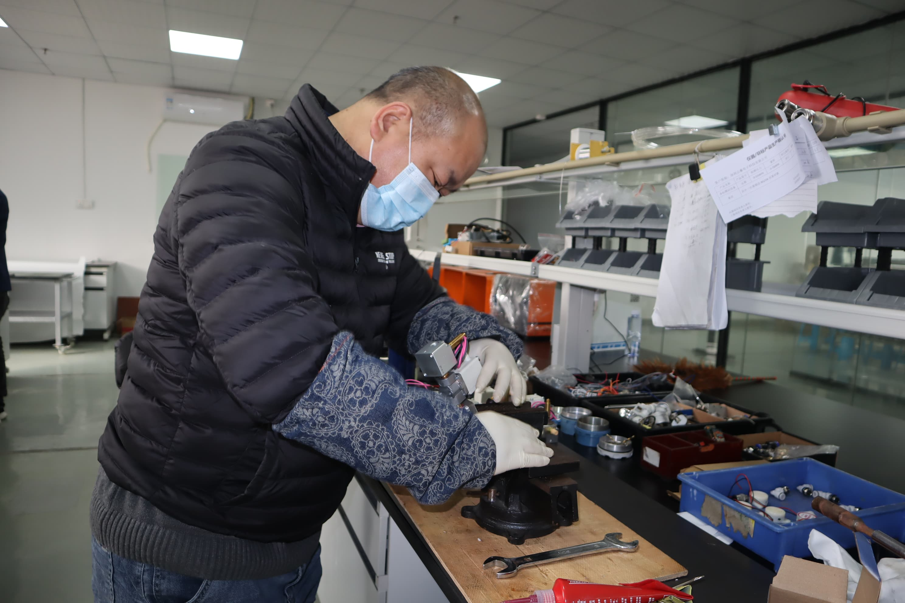
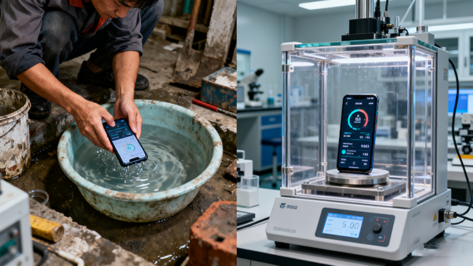
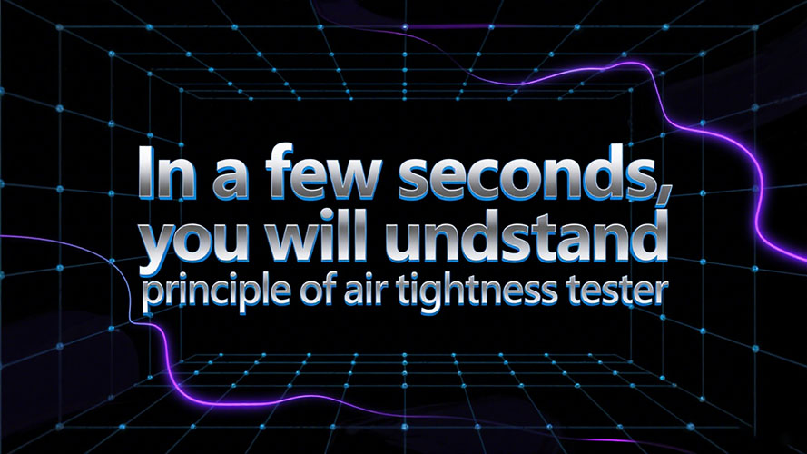
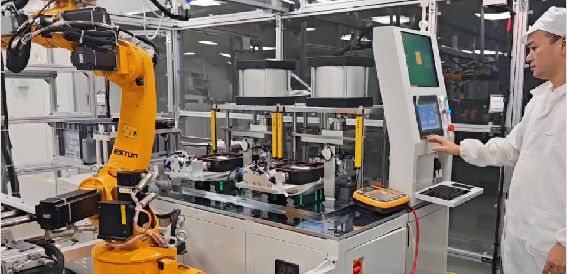
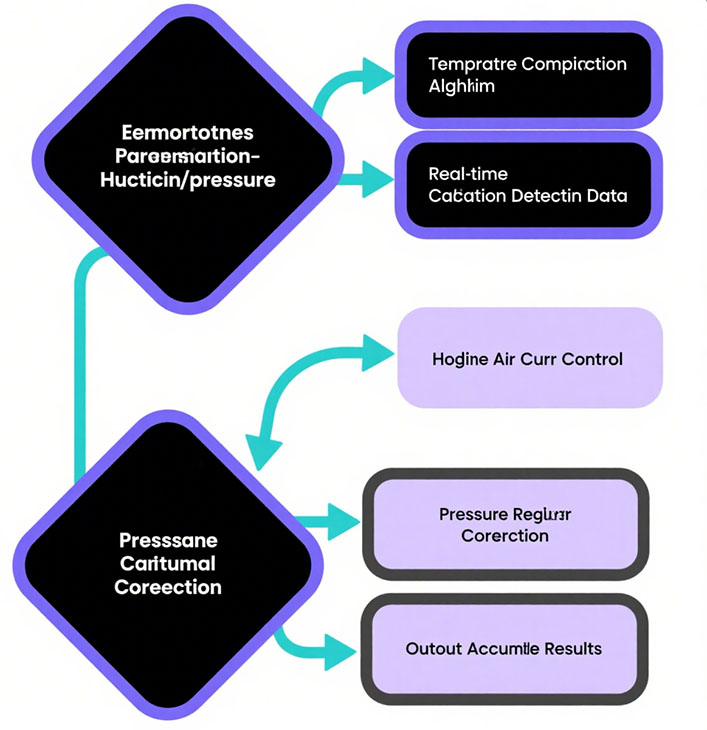
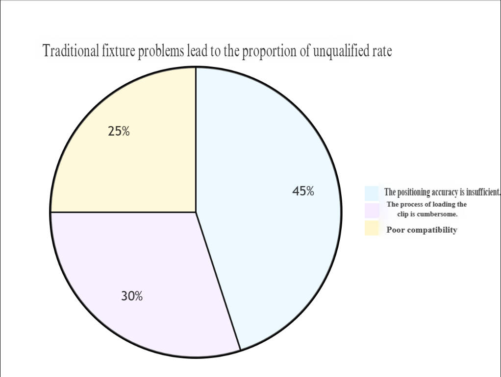
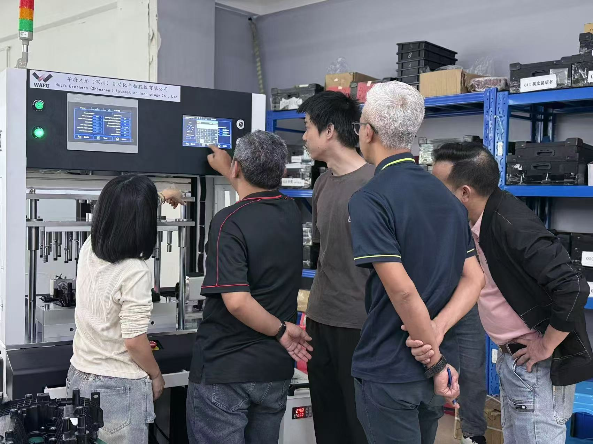
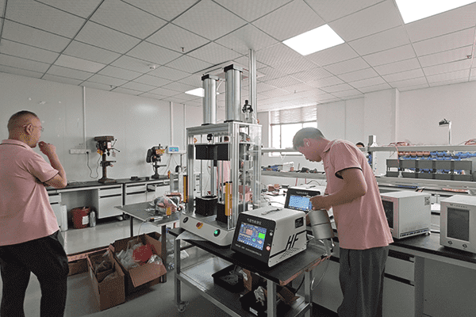

مركز الموارد التقنية
استكشف مقالاتنا التقنية الشاملة وأدلة المستخدم لاكتساب رؤى مهنية ونصائح عملية في مجال اختبارات عدم نفاذ الهواء.
المقالات التقنية
ما هو بالضبط جهاز اختبار مقاومة الماء؟
إذا كنت مالك مصنع، وعند إنتاج منتجات تتطلب “مقاومة الماء”، فربما سمعت عن “جهاز اختبار إحكام الهواء” و“جهاز اختبار مقاومة الماء”. من الاسم يمكن فهم الفكرة بشكل عام، لكن ما هو هذا الجهاز بالضبط؟ وهل يمكنه تلبية متطلبات اختبار “مقاومة الماء” الخاصة بي؟

لا تركز فقط على السعر، مصنع جهاز اختبار التسرب الهوائي القيمة الأساسية هنا
عند اختيار جهاز اختبار التسرب الهوائي، غالبًا ما يكون رد فعل الشركات الأول هو "كم سعر الجهاز؟". لكن في التطبيقات الصناعية الحقيقية، غالبًا ما يكون السعر مجرد عامل سطحي. ما يحدد فعالية الاختبار، التكاليف طويلة الأجل واستقرار الإنتاج، هو القدرات الشاملة التي يمتلكها مصنع جهاز اختبار التسرب الهوائي نفسه.

الاختبار التقليدي مقابل الاختبار الحديث لمقاومة الماء في الهواتف الذكية
في الوقت الحاضر، فإن معدل انتشار الهواتف الذكية مرتفع للغاية -几乎每个人都拥有至少一部，有些人不只拥有一部。 لقد توسعت سيناريوهات الاستخدام من الحياة اليومية العادية إلى بيئات مختلفة متطرفة ومعقدة. أصبح أداء مقاومة الماء عاملاً مهماً لمعظم المستخدمين عند اختيار المنتج. سواء كان ذلك بسبب التناثر العرضي في الحياة اليومية، أو التعرض للمطر أثناء الاستخدام في الهواء الطلق، أو الغمر لفترة قصير بسبب سوء الاستخدام، فإن الهواتف الذكية تحتاج حتماً إلى تلبية متطلبات أداء مقاومة الماء. يؤثر هذا الأداء بشكل مباشر على عمر الجهاز وسلامته. لضمان تلبية المنتجات لمعايير مقاومة الماء الدولية مثل IP67 و IP68، يجب على المصنعين إجراء اختبارات صارمة لمقاومة الماء قبل الشحن. مع التقدم التكنولوجي، تطورت طرق اختبار مقاومة الماء للهواتف الذكية من النهج التقليدية إلى النهج الحديثة، وقد أدى تطبيق تكنولوجيا اختبار التسرب إلى تحسين كبير في كل من الدقة والكفاءة.
دليل شراء أداة اختبار التسرب: خمس مؤشرات رئيسية لا يمكنك تجاهلها
في الإنتاج الصناعي - خاصة في مجالات مثل مركبات الطاقة الجديدة، والأجهزة الطبية، والإلكترونيات الاستهلاكية، والأجهزة المنزلية، والطيران - يعتبر عدم نفاذ الهواء (مقاومة الماء / أداء الإحكام) للمنتجات مؤشر جودة حاسماً. إن اختيار أداة اختبار تسرب مناسبة وموثوقة يؤثر مباشرة على جودة المنتج، وتكلفة الإنتاج، وكفاءة التشغيل. في مواجهة مجموعة واسعة من المنتجات في السوق وعروض البيع المقنعة، كيف يمكنك تجنب المشاكل واختيار المعدات الأنسب؟ يكشف هذا المقال عن المؤشرات الخمسة الرئيسية التي يجب التركيز عليها خلال عملية الاختيار.

من خلال حالة اختبار تسرب الهاتف الذكي، تعرف على مبدأ عمل جهاز اختبار التسرب في ثوانٍ معدودة
ما هو مبدأ عمل جهاز اختبار التسرب؟ قد يخمن معظم الناس أنه يتعلق بـ "تسرب الهواء"، لكنهم لا يعرفون كيف يمكنه تحديد أداء الختم في ثوانٍ قليلة فقط. في الواقع، جهاز اختبار التسرب ليس تكنولوجيا بعيدة المنال. اليوم، من خلال عدة حالات اختبار تسرب الهواتف الذكية، سأشرح مبدأ عمل أجهزة اختبار التسرب!

لماذا أصبح جهاز اختبار عدم نفاذ الهواء الأداة الأساسية لمراقبة الجودة في التصنيع الصناعي؟
في مجال التصنيع الصناعي، جودة المنتج هي حجر الزاوية للمكانة السوقية للشركة. يعتبر عدم نفاذ الهواء، كمؤشر أداء رئيسي، يؤثر مباشرة على السلامة والموثوقية وعمر المنتج. من أنظمة حقن الوقود في السيارات إلى هيكل الهاتف الذكي المقاوم للماء، ومن كبائن الطيران المغلقة إلى مواقد الغاز المنزلية، حتى أدنى تسرب يمكن أن يسبب عواقب كارثية. في هذا السياق، برز جهاز اختبار عدم نفاذ الهواء، بقدراته الاختبارية الدقيقة والفعالة، بسرعة كأداة أساسية لمراقبة الجودة في التصنيع الصناعي.

الإنذار المبكر للتسرب الدقيق : التطبيقات الإبداعية والاتجاهات المستقبلية لأجهزة اختبار عدم نفاذ الهواء عالية الدقة
تحليل متعمق للتقنيات الأساسية وسيناريوهات التطبيق لاختبار عدم نفاذ الهواء عالي الدقة، بما في ذلك مبادئ وتحليل مقارن لطرق اختبار الضغط التفاضلي، واختبار التدفق، وطرق أخرى.

كيف يبني اختبار عدم نفاذ الهواء درعًا قويًا للموثوقية للمنتجات الإلكترونية
المكونات الأساسية للمنتجات الإلكترونية - الدوائر الدقيقة، والرقائق الدقيقة، والوحدات المتكاملة للغاية - تشبه "القلب الحساس" للجهاز. بمجرد اختراق السوائل (الماء، ضباب الزيت)، أو الغازات (الرطوبة)، أو الجسيمات (الغبار) لدفاعات الإحكام، يمكن أن تتراوح العواقب من الدوائر القصيرة وتدهور الأداء إلى فشل الجهاز بالكامل.

حل تحديات مقاومة الماء لمحرك اللفة! كشفت WAFU Brothers عن 3 تقنيات اختبار أساسية
في كل من المنشآت الصناعية والمدنية، يرتبط أداء مقاومة الماء لمحركات اللفة مباشرة بعمر المعدة وسلامة التشغيل. تظهر بيانات الصناعة أن دخول الماء يمثل 62٪ من أعطال المحركات، مع متوسط كل إصلاح 4 ساعات وتكلفة تزيد عن 1000 يوان. الطرق التقليدية (مثل الفحوصات البصرية أو اختبارات الغمر) غير فعالة، وعرضة للأحكام الخاطئة، وقد تتلف المحركات. بالاستفادة من 15 عامًا من الخبرة في الاختبار، أطلقت WAFU Brothers حلاً ذكيًا لاختبار مقاومة الماء لمحركات اللفة، محققة "صفر خطأ في الحكم، وكفاءة عالية، وعمر خدمة أطول" من خلال ثلاث تقنيات أساسية.

تقود WAFU Brothers عصر الاختبار الذكي بالذكاء الاصطناعي: حلول عدم نفاذ الهواء الفعالة والدقيقة
بينما يعتمد التصنيع التحول الرقمي، فإن اختبار عدم نفاذ الهواء - المفتاح لضمان جودة المنتج - ينتقل من الخبرة البشرية إلى الذكاء المدعوم بالذكاء الاصطناعي. بناءً على 15 عامًا من الخبرة في المجال، كانت WAFU Brothers رائدة في حل عدم نفاذ الهواء المدعوم بالذكاء الاصطناعي الذي يدمج إنترنت الأشياء وتحليلات البيانات الضخمة. يقدم هذا النظام "صفر خطأ في الحكم، وإمكانية تتبع كاملة، واختبار تكيفي" لقطع غيار السيارات، وبطاريات المركبات الكهربائية، والأجهزة الطبية، مما يساعد المؤسسات على تحسين كل من الجودة والكفاءة.
إعادة العمل المتكررة في اختبارات الإحكام؟ الجذر يكمن في نظام الاختبار! تظهر لك WAFU Brothers كيفية إصلاحه
في التصنيع، تشبه إعادة العمل الناجمة عن اختبارات الإحكام "مرضًا مزمنًا" مستمرًا - يستنزف الأرباح ويضر بسمعة العلامة التجارية. تظهر دراسة حالة من مصنع قطع غيار سيارات في نينغبو أن معدل إعادة العمل بلغ 8.7٪ في عام 2023، مما أضاف 4.2 مليون يوان في التكاليف السنوية، محتلة 35٪ من إنفاقهم على مراقبة الجودة. تلوم العديد من الشركات عن طريق الخطأ عيوب الإنتاج، متجاهلة المشاكل المحتملة في نظام الاختبار نفسه.
كيفية اختيار جهاز اختبار عدم نفاذ الهواء؟ تشرح WAFU Brothers مبادئ الضغط المباشر، والضغط التفاضلي، والنوع التدفقي
يعد اختبار عدم نفاذ الهواء ضروريًا في التصنيع الصناعي، واختيار أداة الاختبار المناسبة أمر بالغ الأهمية. تقدم WAFU Brothers أجهزة اختبار بالضغط المباشر، والضغط التفاضلي، والنوع التدفقي، كل منها مصمم لتطبيقات محددة. يقدم هذا المقال شرحًا مفصلاً لمبادئها وطرقها، مما يساعد المؤسسات على اتخاذ خيارات مستنيرة.
من اختبارات الماء إلى اختبارات الهواء: أحدثت WAFU Brothers ثورة في كشف الإحكام ومقاومة الماء
يعد اختبار الإحكام ومقاومة الماء خط الدفاع النهائي في مراقبة جودة التصنيع. من اختبار الماء اليدوي إلى اختبار الهواء الدقيق، ترقيات التكنولوجيا تعيد تشكيل معايير الصناعة. كسرت WAFU Brothers القيود التقليدية مع البحث والتطوير المبتكر، مما أدى إلى إنشاء نظام اختبار لجميع السيناريوهات يعيد تعريف "صفر تسرب".

كيف تؤثر العوامل البيئية على اختبار عدم نفاذ الهواء؟
في اختبارات إحكام المنتجات الصناعية، يعد التحقق من عدم نفاذ الهواء خطوة حاسمة لضمان سلامة المنتج وموثوقيته. ومع ذلك، يمكن للعوامل البيئية مثل تقلبات درجات الحرارة وتداخل الضوضاء أن تؤثر بشكل كبير على النتائج. بالاعتماد على 16 عامًا من الخبرة في المجال، تشرح WAFU Brothers بالتفصيل كيف تؤثر هذه العوامل على الاختبار وكيفية التغلب عليها.

تصميم الملحقات المبتكر من WAFU Brothers: كسر اختناقات اختبار عدم نفاذ الهواء وضمان الاستقرار
في اختبار عدم نفاذ الهواء، تعمل الملحقات كـ "جسر" بين أداة الاختبار والقطعة المشغولة، مما يؤثر مباشرة على الكفاءة واستقرار البيانات. من الإنتاج الضخم لقطع غيار السيارات إلى الاختبار الدقيق للأجهزة الطبية، غالبًا ما تسبب الملحقات التقليدية عدم المحاذاة، وأوقات إعداد طويلة، وضعف القدرة على التكيف - مما يؤدي إلى عدم الكفاءة ونتائج غير مستقرة. بالاستفادة من الخبرة التي تزيد عن عقد من الزمان، طورت WAFU Brothers ملحقات عالية الأداء بتصميمات مبتكرة وتكنولوجيا متقدمة، مما يحل نقاط الألم في الصناعة ويصبح محركًا رئيسيًا لكفاءة واستقرار أعلى.

حلول اختبار عدم نفاذ الهواء لجميع السيناريوهات: حماية حاجز مراقبة الجودة النهائي
في التصنيع الحديث، التفتيش النهائي في المصنع ليس فقط الخط الأخير لمراقبة الجودة ولكن أيضًا حيوي لسمعة العلامة التجارية. مع العمليات الصناعية المتزايدة الدقة، توجد الطرق التقليدية لاصطياد التسرب الدقيق. بدعم من سنوات من الخبرة، قدمت WAFU Brothers حل عدم نفاذ الهواء لجميع السيناريوهات، مما يساعد المصنعين على ضمان "صفر تسرب" قبل الشحن.

التغلب على حواجز الحرارة والضوضاء: تحقق WAFU Brothers من اختبارات الإحكام الذكية غير المدمرة
مع تقدم التصنيع الصناعي نحو العمليات عالية الجودة والذكية، أصبحت اختبارات الإحكام تقنية أساسية لضمان جودة المنتج، مستخدمة على نطاق واسع في صناعات السيارات والطيران والطب. مع زيادة دقة التشغيل الآلي المتزايدة، تؤثر أدوات اختبار عدم نفاذ الهواء عالية الدقة مباشرة على سلامة المنتج وأدائه. ومع ذلك، غالبًا ما تكون الدقة محدودة بأداء المستشعر، وطرق الاختبار، وتغيرات درجة الحرارة، وتداخل الضوضاء.